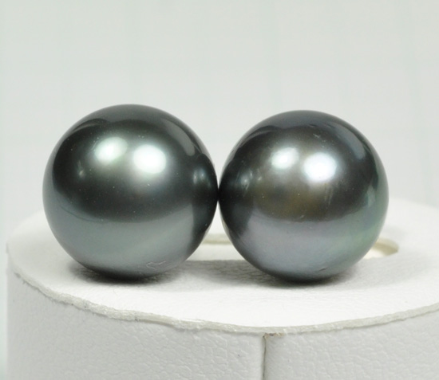

소 개
Black Pearl에 관하여

Black Pearl은 흑나비조개에서 채취된 진주를 말한다.
7색이 빛나는 아름다운 검정색을 띠고 있어, 진주 중에서 가장 희소성이 높고 값비싸다.
인공적으로 착색된 것도 있다.
(패션전문자료사전, 1997.8.25, 한국사전연구사)
해당 사이트는 Black Pearl의 이름을 빌려 현존하는 많은
웹/모바일 서비스에 차별화를 주어 다른 방법으로 편의를
제공하는데 중점을 두고 있습니다.
특 징
Black Pearl은 개개인에게 필요한 자원을 제공해줌으로
일상생활에서의 편의를 제공해줍니다.
휴대폰 기능을 웹 환경으로
스마트폰 앱을 설치시 메신저로 이용 가능 합니다.
PC와 모바일 SNS의 융합
본인의 게시판을 관리할 수 있고 상대방의 게시판에 접근하여
공개된 게시글을 열람할 수 있습니다. member 페이지에서
check 버튼을 통해 자주 들리는 회원 리스트를 위로
선정해 편리하게 접근이 가능합니다. 모바일과 PC환경 모두
제공하여 편리하게 관리하고 사용할 수 있습니다.
Vision
Black Pearl은 일상생활에서 꼭 필요한 기능들을 담아
유저들에게 서비스를 제공하는데 중점을 두고 있습니다.
저희는 언제나 일상생활에서 여러분과 함께하기를
기대하고 있습니다.
Mobile
Black Pearl의 개발상 목표는 N-Screen을 잡는 것입니다.
저희는 반쪽짜리 서비스가 아닌 완벽한 서비스를 제공하는데
중점을 두고 있습니다.
앱스토어에서 Black Pearl을 검색해주세요.